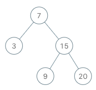

173. 二叉搜索树迭代器
受控中序：栈里只存「从根到下一个待访问结点」的左链，栈顶就是中序的下一个；next 弹栈顶，再把右孩子的左链压栈。
思路
- 构造时从根一路向左，把左链全压进栈；栈顶就是中序的下一个，
hasNext就是栈非空。 next()弹出栈顶返回；它有右子树就把右孩子的左链压栈——相当于「访问完就转到中序后继」。- 均摊 O(1)：每个结点一生最多进栈、出栈各一次，
n次next总共 O(n)；空间只有一条左链 O(h)，比整棵中序存数组的 O(n) 省。
图解
最优解
1import java.util.*;2 3/*4 * Definition for a binary tree node.5 * public class TreeNode {6 * int val;7 * TreeNode left;8 * TreeNode right;9 * TreeNode() {}10 * TreeNode(int val) { this.val = val; }11 * TreeNode(int val, TreeNode left, TreeNode right) {12 * this.val = val;13 * this.left = left;14 * this.right = right;15 * }16 * }17 */18class BSTIterator {19 // 栈里存「从根到下一个待访问结点」的左链，栈顶就是中序的下一个20 private final Deque<TreeNode> stack = new ArrayDeque<>();21 22 public BSTIterator(TreeNode root) {23 pushLeft(root);24 }25 26 public int next() {27 // 弹出栈顶：它是当前未访问结点里最小的28 TreeNode node = stack.pop();29 // 它的右子树里还有更大的未访问值，把右孩子的左链压进去30 pushLeft(node.right);31 return node.val;32 }33 34 public boolean hasNext() {35 // 栈空说明中序已经走完36 return !stack.isEmpty();37 }38 39 // 从 node 一路向左，把左链全压进栈40 private void pushLeft(TreeNode node) {41 while (node != null) {42 stack.push(node);43 node = node.left;44 }45 }46}题目
实现一个二叉搜索树迭代器类
BSTIterator ，表示一个按中序遍历二叉搜索树（BST）的迭代器：
BSTIterator(TreeNode root)初始化BSTIterator类的一个对象。BST 的根节点root会作为构造函数的一部分给出。指针应初始化为一个不存在于 BST 中的数字，且该数字小于 BST 中的任何元素。boolean hasNext()如果向指针右侧遍历存在数字，则返回true；否则返回false。int next()将指针向右移动，然后返回指针处的数字。
注意，指针初始化为一个不存在于 BST 中的数字，所以对 next() 的首次调用将返回 BST 中的最小元素。
你可以假设 next() 调用总是有效的，也就是说，当调用 next() 时，BST 的中序遍历中至少存在一个下一个数字。
示例：

输入 ["BSTIterator", "next", "next", "hasNext", "next", "hasNext", "next", "hasNext", "next", "hasNext"] [[[7, 3, 15, null, null, 9, 20]], [], [], [], [], [], [], [], [], []] 输出 [null, 3, 7, true, 9, true, 15, true, 20, false] 解释 BSTIterator bSTIterator = new BSTIterator([7, 3, 15, null, null, 9, 20]); bSTIterator.next(); // 返回 3 bSTIterator.next(); // 返回 7 bSTIterator.hasNext(); // 返回 True bSTIterator.next(); // 返回 9 bSTIterator.hasNext(); // 返回 True bSTIterator.next(); // 返回 15 bSTIterator.hasNext(); // 返回 True bSTIterator.next(); // 返回 20 bSTIterator.hasNext(); // 返回 False
提示：
- 树中节点的数目在范围
[1, 105]内 0 <= Node.val <= 106- 最多调用
105次hasNext和next操作
进阶：
- 你可以设计一个满足下述条件的解决方案吗？
next()和hasNext()操作均摊时间复杂度为O(1)，并使用O(h)内存。其中h是树的高度。
题面取自力扣当前版本。
数据快照 2026-11-04。题面版权归力扣所有，本站点仅供本人学习使用，请勿对外发布。